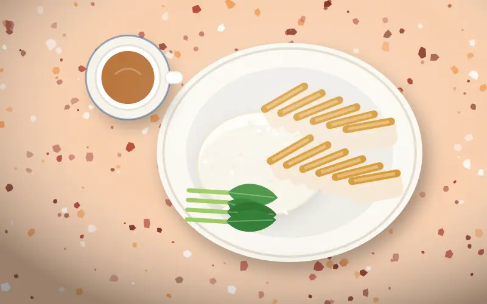
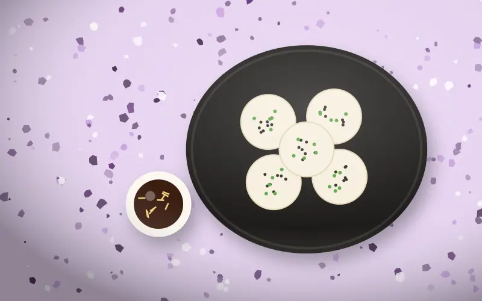
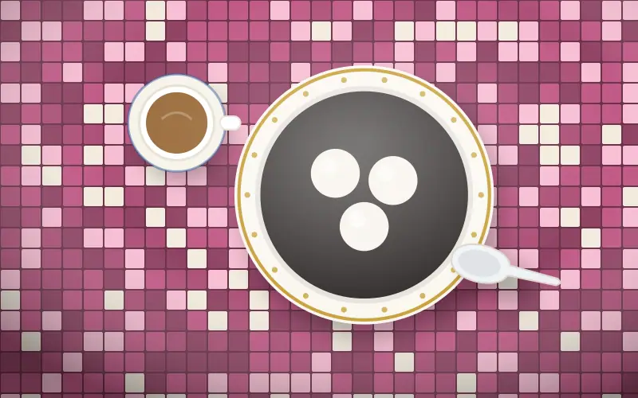
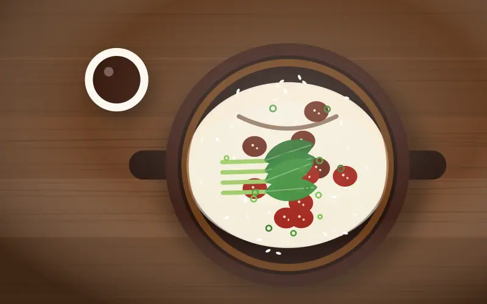
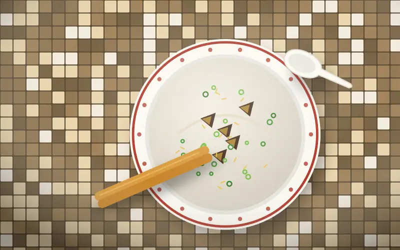
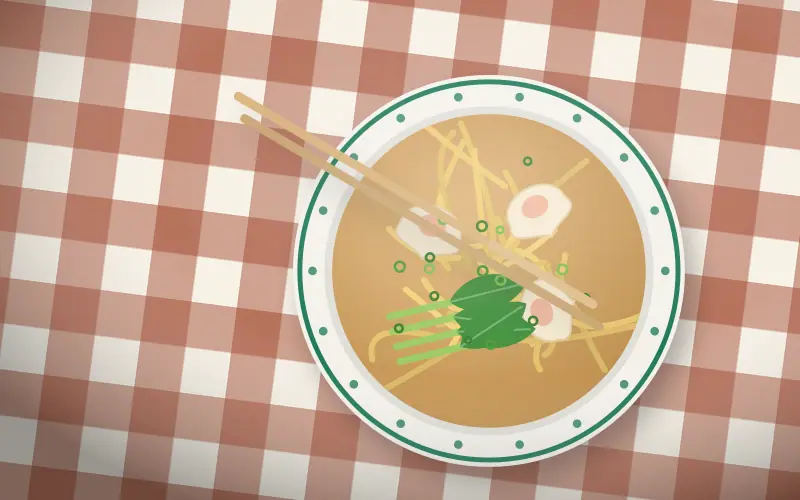
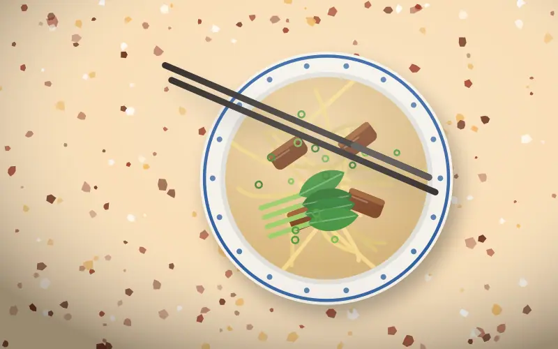
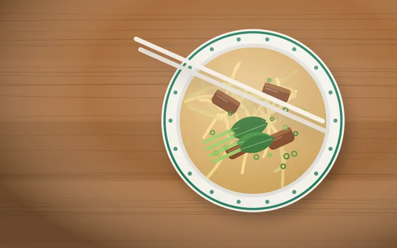

Best value for money 最抵食
The 30 highest HK Cheap Eats Value Scores. 30 places.
 Kung Wo Beancurd Factory公和荳品廠 · Sham Shui Po$26
Kung Wo Beancurd Factory公和荳品廠 · Sham Shui Po$26  Kwan Kee Store坤記糕品 · Sham Shui Po~$14
Kwan Kee Store坤記糕品 · Sham Shui Po~$14 Hop Yik Tai合益泰小食 · Sham Shui Po$18
Hop Yik Tai合益泰小食 · Sham Shui Po$18  Sang Kee Congee Shop生記粥品專家 · Sheung Wan~$48
Sang Kee Congee Shop生記粥品專家 · Sheung Wan~$48
Joy Hing Roasted Meat再興燒臘飯店 · Wan Chai$58 Sun Kwai Heung Barbecue新桂香燒臘 · Chai Wan~$52
Sun Kwai Heung Barbecue新桂香燒臘 · Chai Wan~$52 Mui Kee Congee妹記生滾粥品 · Mong Kok~$45
Mui Kee Congee妹記生滾粥品 · Mong Kok~$45 Sun Hing Restaurant新興食家 · Kennedy Town$52
Sun Hing Restaurant新興食家 · Kennedy Town$52  Kai Kai Dessert佳佳甜品 · Jordan$32
Kai Kai Dessert佳佳甜品 · Jordan$32  Happy Cake Shop快樂餅店 · Wan Chai~$20
Happy Cake Shop快樂餅店 · Wan Chai~$20 Lau Sum Kee劉森記麵家 · Sham Shui Po$46
Lau Sum Kee劉森記麵家 · Sham Shui Po$46 
Cheung Hing Kee Shanghai Pan-fried Buns祥興記上海生煎包 · Tsim Sha Tsui~$32 Hometown Teahouse一休 · Cheung Chau~$38
Hometown Teahouse一休 · Cheung Chau~$38 Kam Wah Cafe金華冰廳 · Mong Kok$38
Kam Wah Cafe金華冰廳 · Mong Kok$38  Kung Lee Sugar Cane Juice公利真料竹蔗水 · Central~$22
Kung Lee Sugar Cane Juice公利真料竹蔗水 · Central~$22 Kwok Kam Kee Cake Shop郭錦記餅店 · Cheung Chau~$16
Kwok Kam Kee Cake Shop郭錦記餅店 · Cheung Chau~$16 On Lee Noodle安利魚蛋粉麵 · Shau Kei Wan~$40
On Lee Noodle安利魚蛋粉麵 · Shau Kei Wan~$40
Auntie Yi Tofu Pudding依姐豆腐花 · Lamma Island~$15
Kwan Kee Claypot Rice坤記煲仔小菜 · Sai Ying Pun$88 Yuen Kee Dessert源記甜品 · Sai Ying Pun~$30
Yuen Kee Dessert源記甜品 · Sai Ying Pun~$30 Ah Po Tofu Fa亞婆豆腐花 · Tai Po~$16
Ah Po Tofu Fa亞婆豆腐花 · Tai Po~$16 Tsim Chai Kee Noodle沾仔記 · Central~$42
Tsim Chai Kee Noodle沾仔記 · Central~$42
Ho Hung Kee何洪記 · Causeway Bay$88
Tak Fat Beef Balls德發牛丸 · Central~$42 Kam Fung Cafe金鳳茶餐廳 · Wan Chai$36
Kam Fung Cafe金鳳茶餐廳 · Wan Chai$36 
Mak An Kee Noodle麥奀記（忠記）麵家 · Central~$45
Man Kee Cart Noodle文記車仔麵 · Sham Shui Po~$48 Sing Heung Yuen勝香園 · Central$40
Sing Heung Yuen勝香園 · Central$40  Australia Dairy Company澳洲牛奶公司 · Jordan$42
Australia Dairy Company澳洲牛奶公司 · Jordan$42  Wai Kee Noodle Cafe維記咖啡粉麵 · Sham Shui Po~$50
Wai Kee Noodle Cafe維記咖啡粉麵 · Sham Shui Po~$50More guides
Best meals under HK$50Cheap eats under HK$30Best value for moneyLate-night cheap eatsHidden gemsCheap breakfast in Hong KongRoast Meats 燒味Cha Chaan Teng 茶餐廳Dim Sum 點心Noodles 粉麵Congee 粥品Claypot 煲仔Cantonese 粵菜Seafood 海鮮Desserts 甜品Bakery 餅店Street Snacks 小食Vegetarian 素食HK Fast Food 快餐Rice Noodles 米線Thai 泰國菜Curry 咖喱Japanese 日式Vietnamese 越南菜Taiwanese 台灣菜Shanghainese 上海菜Dumplings & Northern 北方菜HK-style Western 港式西餐